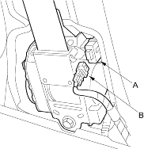
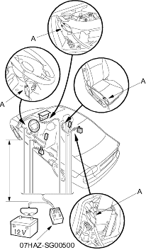

- Disconnect the 2P connector between the seat belt tensioner (A) and floor wire harness (B).

- Pull the seat belt out all the way and cut it.
- Cut off each connector, strip the ends of the wires, and connect the deployment tool alligator clips (A) to the wires. Place the deployment tool at least 30 feet (10 meters) away from the vehicle.
